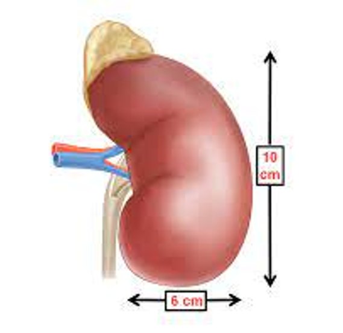
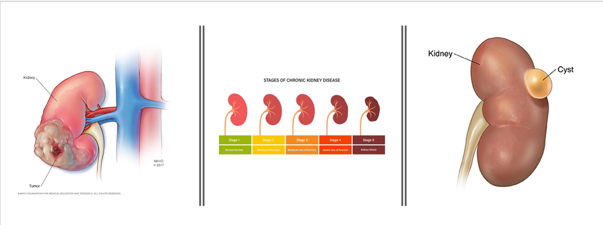

We all have 2 kidneys in our bodies near the Spinal Cord. Which is bean shaped. They are reddish brown organs. The size of a Kidney is about the size of your fist(10-12cm) .They are also covered by a tough capsule of fibrous connective tissueknown as Renel Capsule
 Urea (From protein metabolism)
Uric acid (From nucleic acid metabolism)
Creatinine (From metabolic breakdown of creatine phosphate)
End products of HB metabolism
Metabolites of hormones
Foreign substances: drugs, pesticides, other chemicals ingested in food
Diseases that affect kidneys usually affect both kidneys. Causes accumulation of waste products and fluids causing severe uremia (kidney failure)
Drug Therapy is nothing but using Medicines for patients.
Dialysis is a process that artificially removes metabolic wastes from the blood in order to compensate for renal (kidney) failure
A kidney transplant is a surgery done to replace a diseased kidney with a healthy kidney from a donor. The kidney may come from a deceased organ donor or from a living donor.